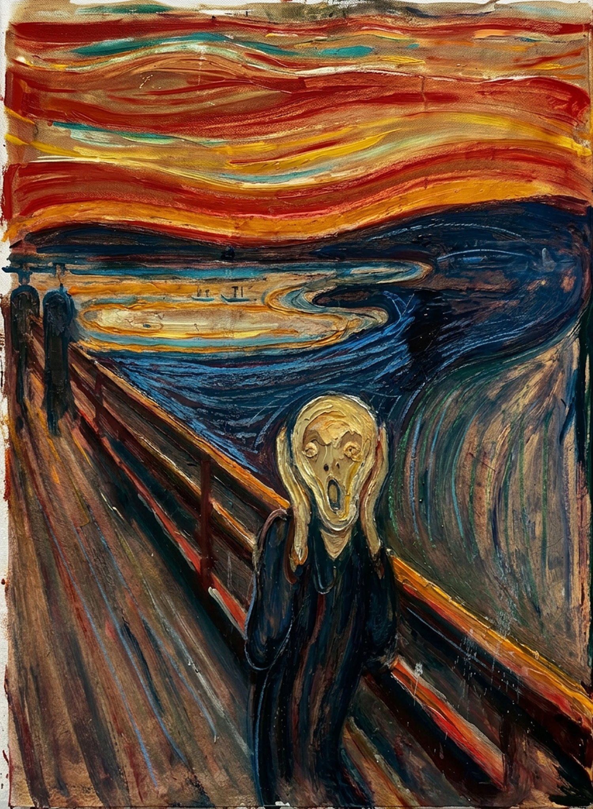
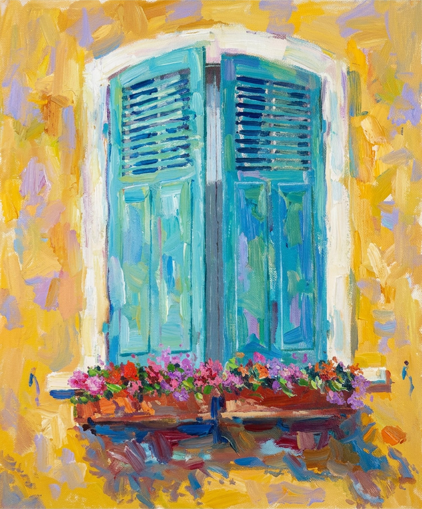
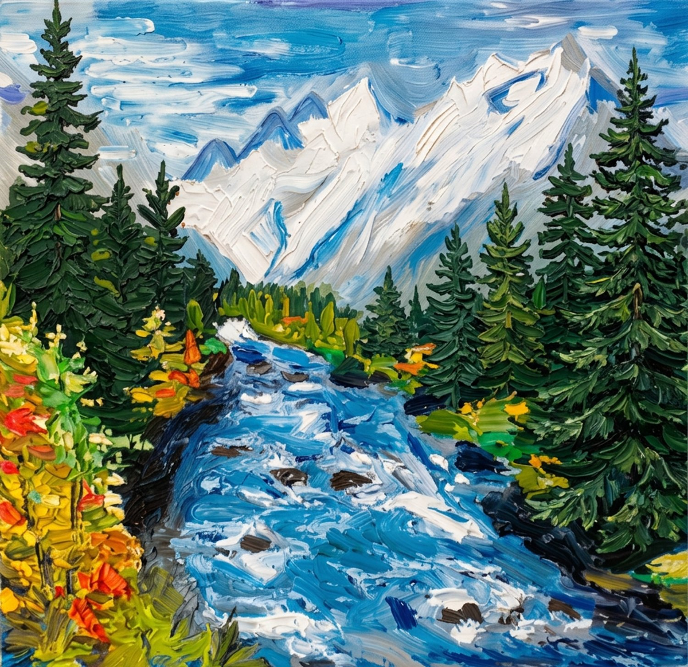
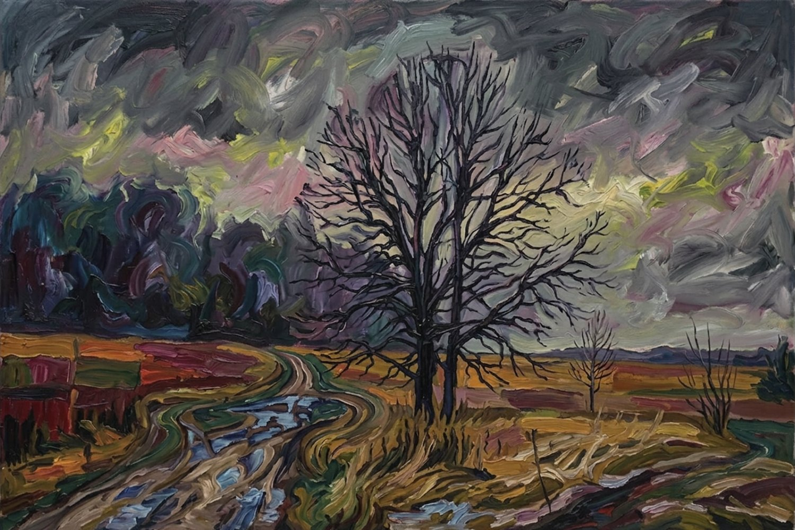
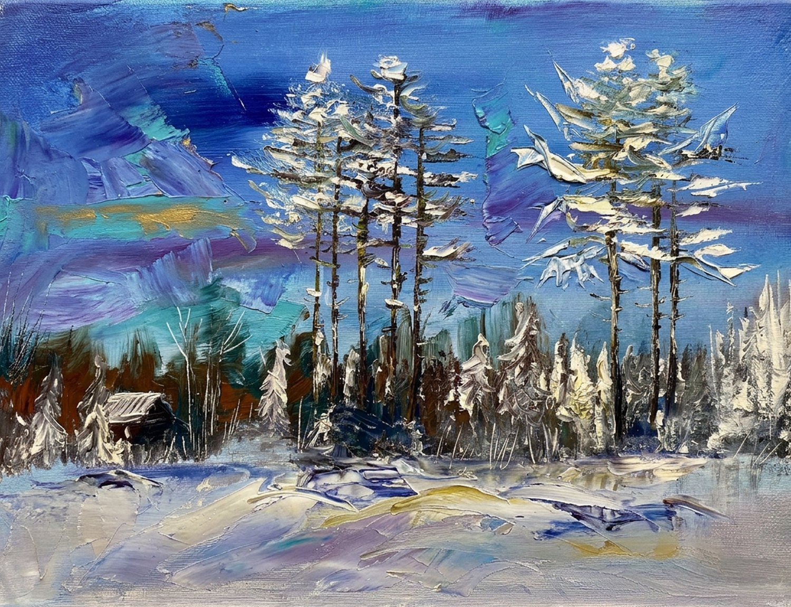
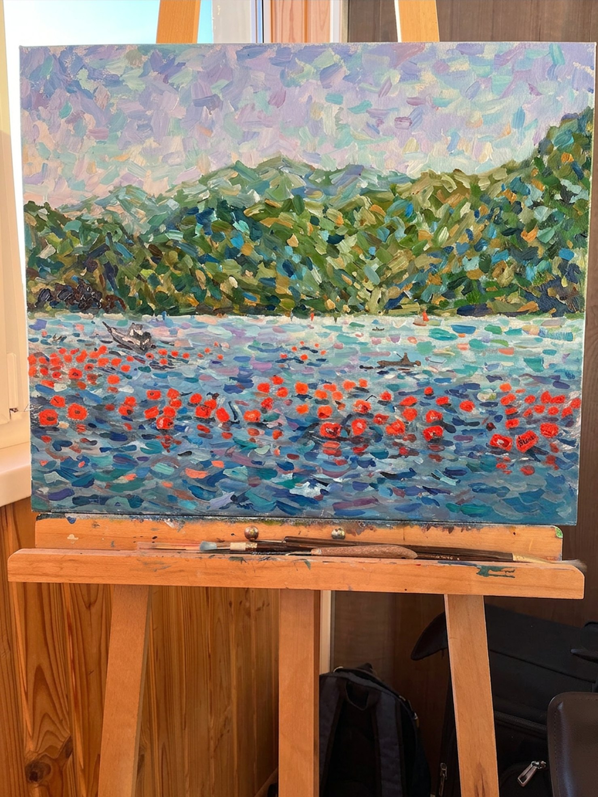
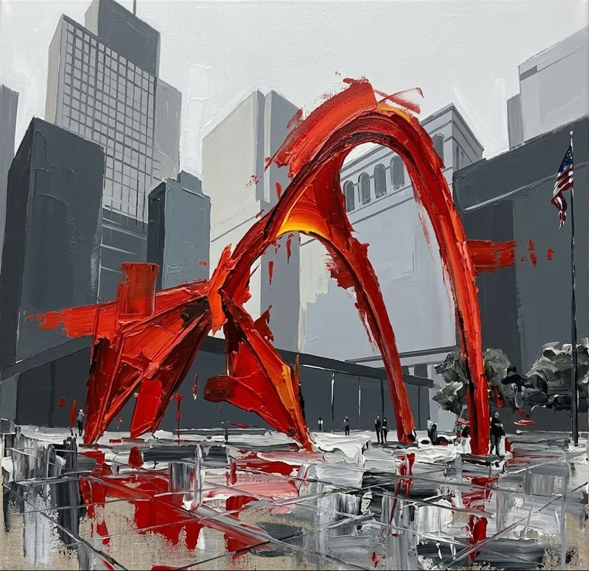
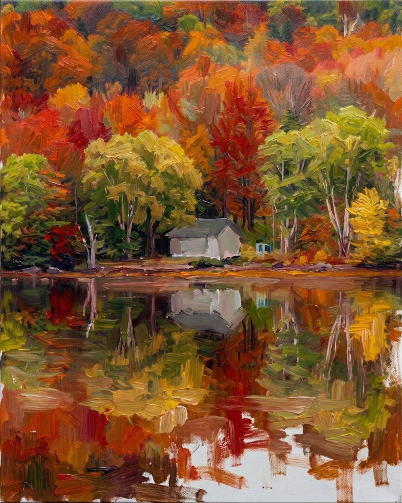
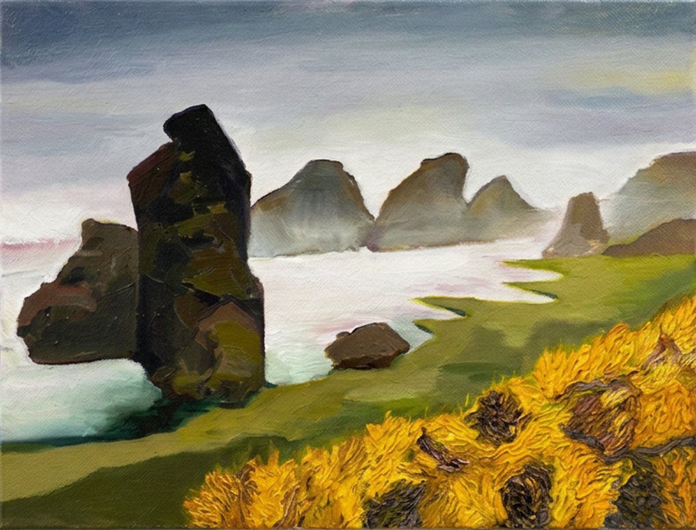
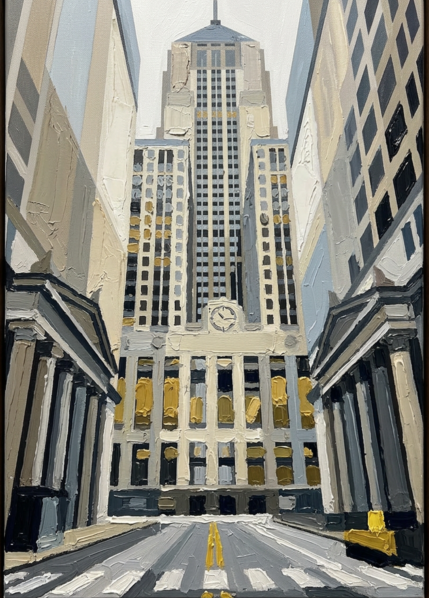

Design is the job. This is what happens when I close the laptop — oil and oil on canvas. Mostly studies and copies, painted slowly, badly and happily. No brief, no deadline, no right answer. The best clients get one as a gift.









